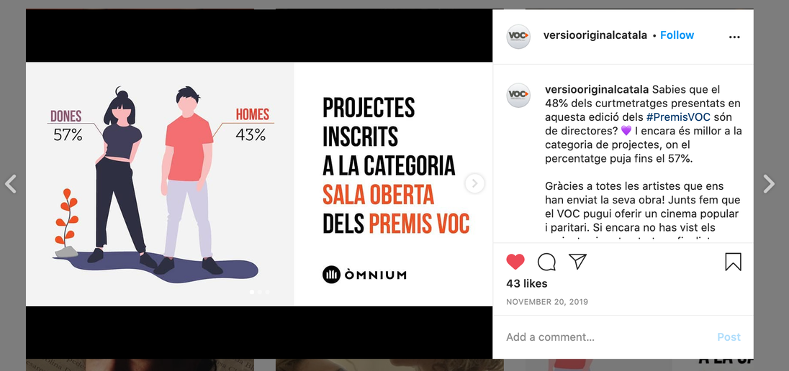
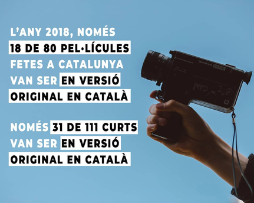

La Clara Comunicació
Ran press strategy for a social awareness campaign on homelessness for the Premis VOC, tailoring each pitch to the journalist and outlet rather than sending a generic release. The film starred Enric Molina, who lived without stable housing for several years, paired with data backed content built with a design partner.
The challenge
Journalists are pitched constantly, and most social cause campaigns lose to the sheer volume of proposals competing for the same coverage. The campaign needed a press strategy that would not get lost in that noise.
What I did
Rather than a single generic release, I tailored each pitch to the specific journalist and outlet, built around their recent coverage and beat. The film at the center of the campaign starred Enric Molina, who had lived without stable housing for several years, and the message was paired with data backed content built together with a design partner to give journalists something concrete to report on, not just an emotional appeal.
Result
The campaign was recognized at the Premis VOC and secured coverage that a generic press release distribution would not have reached.
Work samples

